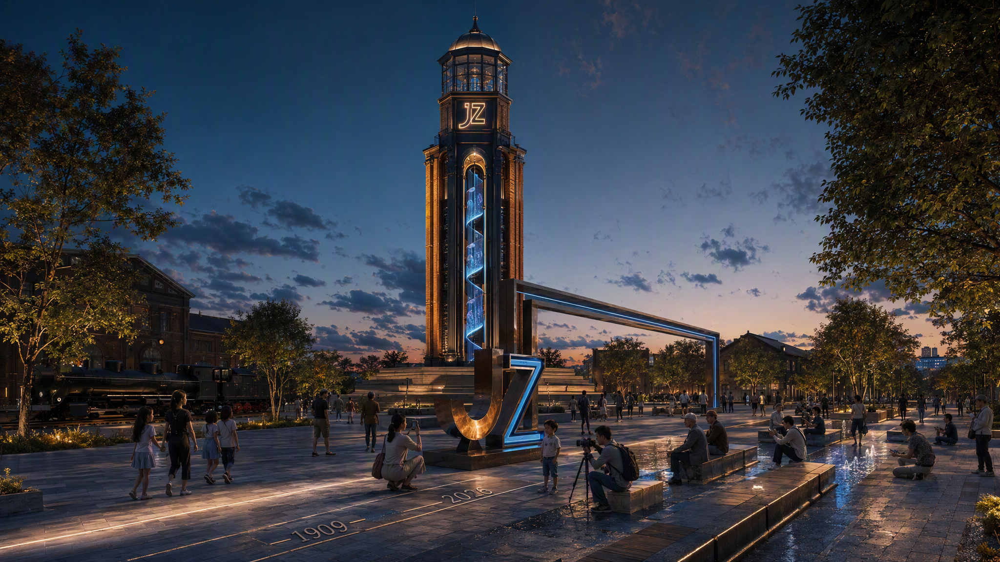
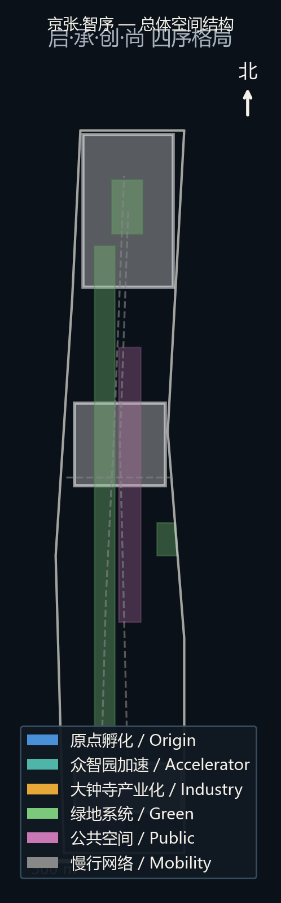
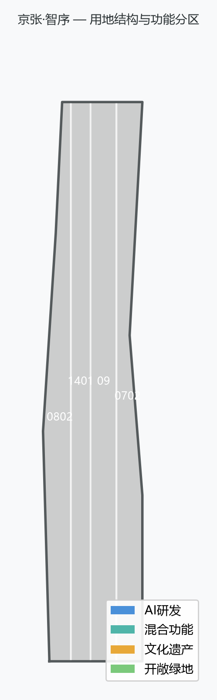
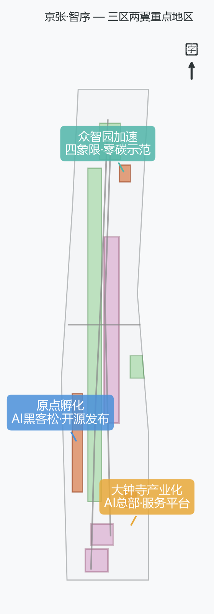
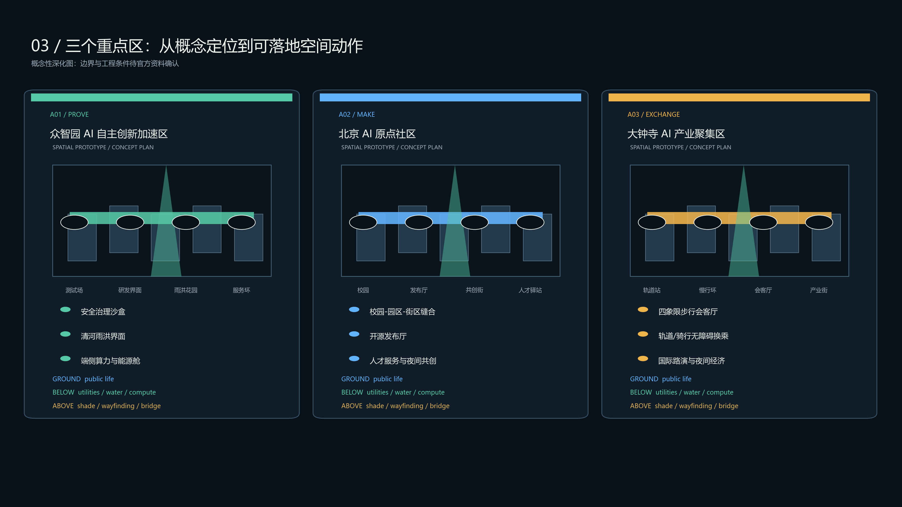
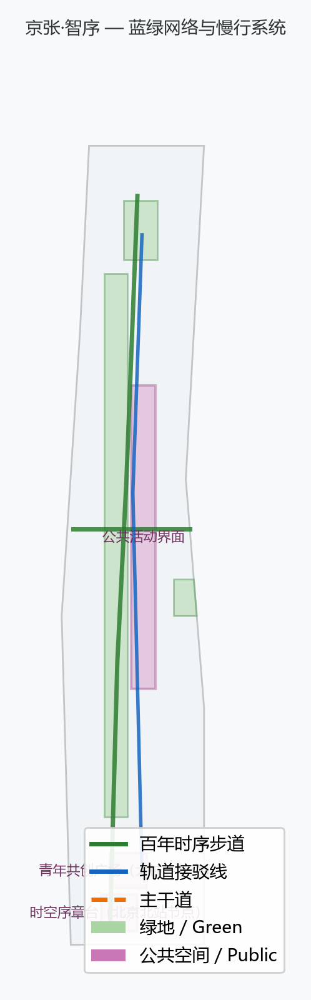

京张·智序
总概念：《京张·智序》——AI启京张 · AI续京张 · AI创京张 · AI尚京张，以『智序』统领京张百年时序与城市新序，用 AI 重新梳理百年铁路走廊的时空秩序。基于 provisional boundary 生成，保留精度警示，组织方数据缺口不阻断内容评分。
京张·智序
设计宣言：让百年铁路的线性遗产，成为 AI 时代的城市公共操作系统。
“智序”不是把 AI 贴到城市表面，而是把京张铁路曾经创造的连接、协作与自主创新精神，转译为一套可行走、可参与、可治理的公共空间系统：一条脊（13km 百年时序步道）、三座客厅（序章台、创新界面、四象限会客厅）、四层协议（感知—协作—治理—传播）。方案以“先公共、后产业；先试点、后扩展；先可解释、后智能化”为实施原则，让每一个 AI 场景都必须拥有空间载体、服务对象、数据边界、人工复核和退出机制。
这使京张 AI 创新带从一条被观看的遗产线，转变为一条被使用的城市创新基础设施：人们可以在这里行走历史、交换知识、测试技术、共同治理，也可以在真实日常中感受 AI 如何改善公共生活。
空间体验图：从概念到使用
以下为概念表达图，用于说明空间氛围、尺度、材料和使用方式，不代表现状、官方效果图或已批准建设方案。



设计依据与资料清单
本 formal 方案以北京市规划和自然资源委员会海淀分局发布的《百年京张AI创新带城市设计国际方案征集资格预审公告》为第一依据，并以 brief/site-package/ 中经维护者登记的临时粗略边界、重点区域、枚举、指标和来源清单为机器可读依据。AI agent 在生成方案前读取了 design_brief.json、allowed_design_space.json、sources.json、enums/、ranges/、schemas/、data/source_registry.json 和 data/processed/agent_fact_pack.md，并用 project_scope_summary.csv、agent_task_requirements.csv、source_use_matrix.csv、missing_data_checklist.csv 建立了任务、范围、资料用途和缺口清单。所有设计判断都拆分为可追溯来源、可复算指标、可校验图层和可人工复核假设。公告要求方案达到控制性详细规划的城市设计深度和规划综合实施方案的城市设计深度，因此文本叙述不能替代 GeoJSON、指标表、A3 文册、A0 展板和 HTML 电子展示成果 来源 来源 深度。
资料登记表的使用边界如下 来源：
- data/source_registry.json 登记公开、清权与临时资料的用途边界。
- 当前登记摘要：formal 可用资料 7 条，背景资料 1 条，provisional-only 资料 1 条。
- agent 不得把 background_only 或 provisional_only 资料升级为 official boundary、法定控规、正式评分依据或政府实施承诺。
data/processed/agent_fact_pack.md 是本方案的阅读导航层，不是新的权威来源 来源。它帮助 agent 把三层范围、三处重点区、公告任务、agent.1-agent.6、资料可用性和缺资料事项组织成可读方案；事实判断仍需回到已登记的原始材料 来源 来源，完整来源关系由 sources.json 保存。
本脚手架在官方 SITE_BOUNDARY 或三处 KEY_AREA 尚未取得时，使用 brief/site-package/geometry/provisional_boundaries.geojson 生成临时 formal 包。提交包中的 geometry/site_boundary.geojson 与 geometry/key_areas.geojson 均标注为 provisional_constraint、official_boundary=false，只能用于方案生成、自检、可视化和设计讨论，不能作为 official redline、审批依据、精确面积依据或法定控制结论。该组织方数据缺口本身不阻断内容评分；替换 official polygons 后，site boundary、key areas、land use、roads、green space、public space、buildings、phasing 和 metrics 均需重算。

三层范围工作框架
方案按照公告确定的三个层次组织工作：统筹研究范围关注 43.6 平方公里的AI产业生态、战略定位、创新链和未来城市形态；总体设计范围关注 11.4 平方公里京张遗址公园周边 1-2 公里城市地区和产业区，要求形成城市更新总体框架、产业空间布局、交通市政支撑和城市风貌控制；重点区域范围关注 368.4 公顷三处详细设计地区，要求明确功能业态、建筑规模、拆改留分类、公共空间连通和交通组织。三层范围在 compliance_matrix.json 中逐条映射，保证公告 1.3、1.4、1.5 与 agent.1-agent.6 的必选任务都有章节、图层、指标、图纸和 HTML 证据 深度 深度 标准。边界与重点区域分别以 geometry/site_boundary.geojson#SITE-001 和 geometry/key_areas.geojson#PROV-KEY-001 为图层落点，其登记关系见 data/processed/agent_fact_pack.md 空间数据 空间数据 来源。

三层工作不是互相割裂的图纸集合。统筹研究决定产业链和城市形态判断，总体设计把判断落实到更新项目、空间结构和设施承载，重点区域详细设计验证具体地块、建筑、交通、公共空间和AI应用场景的可实施性。本方案先锁定 provisional 边界与约束，再生成用地、建筑、道路、绿地、公共空间、分期和AI服务节点图层，最后从这些图层复算指标；任何无法从结构化数据复算的面积、比例、规模或项目数量，不写入正式结论。
| 层级 | 设计问题 | 方案回答 | 数据落点 |
|---|---|---|---|
| 统筹研究范围 | AI产业生态和未来城市形态如何组织 | 以"智序"为总纲：启（起点）→承（文脉）→创（变革）→尚（风尚），形成"一带四序"创新链 | compliance_matrix.json、standard_matrix.json |
| 总体设计范围 | 产业空间、城市更新、交通市政和风貌如何落图 | 13km 百年时序步道为空间主轴，启承创尚四序沿廊展开，用地、建筑、道路、绿地、公共空间和分期图层共同表达 | 空间数据、空间数据 |
| 重点区域范围 | 三处片区如何达到详细设计深度 | 众智园（创·序貌）、原点社区（创·序貌+承·序脉交汇）、大钟寺（尚·序风）分别深化 | 空间数据、空间数据、空间数据 |
总体概念：京张·智序
总概念：《京张·智序》
AI启京张 · AI续京张 · AI创京张 · AI尚京张
概念释义
"智"即 AI 智能，"序"即历史时序与城市新序。本方案用 AI 重新梳理京张的百年时序，开启面向未来的城市新秩序。谐音"秩序"：京张铁路曾定义中国铁路的秩序（1909 年詹天佑以自主工程确立中国铁路标准），AI 将定义城市的新秩序。"序"字同时承担三重含义——时间序（13km 走廊 = 117 年，步行即穿越百年）、空间序（原点社区孵化→众智园加速→大钟寺产业化的产业梯度）、逻辑序（AI 沿廊分层部署：感知→认知→服务→体验）。
"序"统领四个子概念，构成一条完整的推进链：时间起点 → 时间延续 → 空间变革 → 价值引领：
| 子概念 | 副题 | 维度 | 逻辑角色 | 空间映射 |
|---|---|---|---|---|
| AI启京张 | 启·序章 | 起点 | 从哪里开始：AI 为京张翻开序章 | 北京北站起点区、AI 基础设施首段 |
| AI续京张 | 承·序脉 | 传承 | 接什么传统：詹天佑创新基因在数字时代延续 | 13km 百年时序步道、AR 历史叠合 |
| AI创京张 | 创·序貌 | 变革 | 破什么旧界：重塑城市空间与产业形态 | 众智园、原点社区、大钟寺三重点区 |
| AI尚京张 | 尚·序风 | 引领 | 立什么新风：AI 成为城市新美学与新潮流 | 青年共创广场、智慧生活示范段 |
"启承创尚"不是四个散点，而是同一"序"的不同维度：启/承/创是事实层（AI 对走廊做了什么），尚是价值层（走廊成为什么）。方案由此从"功能更新"升维到"文化引领"，对应评审维度中文化叙事与场景体验的落点。
命名体系与视觉识别方向
方案以“京张·智序”为主名称，英文名称为 “Jingzhang·ZhiXu AI Innovation Belt”，简称“智序带”。完整命名体系按“一带、四序、三区”组织，避免散点式命名：
| 层级 | 命名 | 释义 |
|---|---|---|
| 一带 | 百年京张 AI 创新带 | 以京张铁路遗址公园为主轴的整体空间品牌 |
| 四序 | 启·序章 / 承·序脉 / 创·序貌 / 尚·序风 | 时间起点、遗产传承、空间变革、价值引领 |
| 三区 | 众智园 / 原点社区 / 大钟寺 | 加速、孵化、产业化三组空间锚点 |
传播口号采用“百年时序，AI 新序”；英文版采用 “From Rail Order to AI Order”，强调京张铁路曾定义中国工程秩序，AI 将在此定义城市新秩序。
Logo 与视觉识别提出“双轨序标”方向：以一条铁轨青铜线（百年时序）与一条 AI 数据蓝线（智能交互）平行交叉构成“序”字意象，象征历史轨道与数字轨道在同一走廊相遇；导视系统沿用时间轨/智能轨双系统，用于步道年代编码、AR 界面、数字碑刻与活动视觉。该识别系统为概念方向，具体字体、图像、企业标识与公共艺术使用须在实施前完成清权与专业深化 来源。
空间结构：一带四序
以京张遗址公园活力带为空间主轴（一带），启承创尚四序沿廊组织（四序）：
- 序章段（北京北站节点）：1909 年京张铁路起点，方案在此设"时空序章台"——物理时间轴零点、AI 基础设施首段、铁路历史与 AI 未来的对话广场 空间数据。
- 序脉带（全线 13km）：连续百年时序步道——慢行主脊、遗产叙事脊梁、AR 历史叠合系统载体 空间数据 空间数据。
- 序貌区（三重点区）：众智园、原点社区、大钟寺的空间与产业重构 空间数据 空间数据 空间数据。
- 序风点（全廊节点）：青年共创广场、智慧生活示范段散布于沿线，AI 生活方式的可感知样本 空间数据 空间数据。

时间轴设计：13km = 117 年
百年时序步道按年代组织遗产展示，车站节点成为"时间锚点"：
| 年代段 | 时代主题 | 设计动作 |
|---|---|---|
| 1909 起源 | 京张铁路建成，中国工程自主起点 | 北站"时空序章台"：1909 与 2026 时空对话 |
| 1920s-1940s | 早期运营与民族工业 | 车站遗产展示、老照片 AR 叠合 |
| 1950s-1970s | 工业化与城市拓展 | 工业遗存活化、社区记忆角 |
| 1980s-1990s | 中关村电子一条街，信息化启蒙 | 电子街记忆展、数字档案墙 |
| 2000s-2010s | 互联网与数字化 | 数字京张互动装置 |
| 2020s 至今 | AI 时代：大模型/智能体/具身智能 | AI 场景体验、开源共创节点 |
统筹研究范围产业与未来城市研究
统筹研究范围的核心任务是构建世界级 AI 创新生态体系。本方案以"智序"逻辑组织海淀 AI 产业链的空间协同：启（源头创新：高校院所与大模型基础研究）→承（开源生态：开源社区与开发者网络）→创（产业转化：孵化器、加速器与领军企业）→尚（价值引领：AI 生活方式与国际传播）。这一创新链同时回应"五大功能"（创新研发、产业加速、场景体验、文化展示、开放共享）与"三区两翼"协同（AI原点社区、众智园加速区、大钟寺产业区 + 中关村科技服务翼、小月河场景赋能翼）来源 标准。
统筹研究并不新增伪精确红线；它通过 标准 要求的城市风貌、公共空间和建筑布局统筹，回接 空间数据、空间数据 与 深度，说明产业策略最终落到可见、可复核的空间结构。
未来城市形态研究回答人工智能如何改变工作、生活、社交、学习、交通和公共服务。本方案把 AI 交通系统（智慧慢行、无人接驳、自适应信号）、连续绿色空间（百年时序步道、清河界面）、创新服务设施（开源发布厅、算力驿站、路演客厅）和国际化生活工作氛围落实为可定位的功能区、节点、廊道和场景 空间数据 空间数据。产业战略指标、AI创新指数、人才密度、空间供给类型和AI+垂直应用重点区域写入指标体系，并标明哪些是官方、哪些是设计建议、哪些仍待正式数据校准。全球AI创新活动、开发者社区、开放场景或朝圣路线均写为"概念建议/参考方案/可供专业团队深化研究"，不写成已经确定的政府活动或实施安排。
总体设计范围城市更新与控规深度城市设计
总体设计范围要求达到控制性详细规划的城市设计深度。方案提出城市更新总体空间结构、低效空间识别、更新项目清单、实施政策建议、产业功能比例、空间组织模式、建筑总规模和综合承载能力评估。geometry/land_use.geojson 完整覆盖设计边界且无重叠，geometry/buildings.geojson 表达更新建筑基底或保留建筑基底，geometry/roads.geojson 表达微循环、慢行和轨道接驳关系 标准 空间数据 空间数据。metrics.json 复算核心面积、比例和图层数量 指标 深度 深度。
总体设计的空间骨架是"一带四序"：以百年时序步道为主轴，序章段（北站）、序貌区（三重点区）、序风点（青年与智慧生活节点）串接，轨道站点一体化、道路微循环、非机动车停放、停车供给、创新服务平台、人才生活服务、新型基础设施、分布式能源和端侧算力围绕骨架布局。涉及建筑高度、开发强度、道路红线、退线和设施标准的内容，若无官方控制条件，写为"待正式控规条件确认"，不以 agent 推测值冒充审定指标。
重点区域详细设计
重点区空间深化、公共路线与 AI 运营证据

三处重点区不以同一套功能清单复制，而以三种城市角色形成连续的专业分工：众智园是 PROVE，承载安全治理沙盒、清河雨洪界面和端侧算力/能源接口；北京 AI 原点社区是 MAKE，缝合校园、园区与街区，并以开源发布厅和人才服务支撑成果生成；大钟寺是 EXCHANGE，以四象限会客厅、轨道与骑行换乘、国际路演和夜间公共生活完成产业交换。每一原型同时标明地面公共性、地下韧性服务和空中低碳连接，作为待官方边界、权属和工程条件确认后的概念性深化基线 深度 空间数据。

公共空间按一日 24 小时而非单一职业组织：Z 世代“学习—共创—夜间发布”，千禧世代“轨道到达—路演—商务服务”，银发与儿童“慢行—档案/教育—自然花园”，一线运维“设备舱—巡检—夜间工单”。地面连续步道、雨洪花园和休憩设施对公众开放；地下仅提供可审计的水、能、算力和运维接口；空中设施以遮阳、导视和安全连接为限，避免智能化侵占公共可达性 深度 深度。

三个核心 AI 场景采用同一公共服务闭环：服务对象 → 空间载体 → 最小必要数据 → AI 辅助输出 → 人工复核 → 公开指标/停止条件。安全治理沙盒由区级公共管理与实验室协同运营，端侧算力服务点由平台与物业共同维护，四象限终端由交通和社区服务主体共同负责。任何试点均保留人工服务、静态导视或手动流程作为兜底，不以 AI 输出替代规划审批、执法或公共决策 深度 深度。
重点区域详细设计是必选项。三处重点区域分别成为"智序"的空间载体：
众智园AI自主创新加速区（创·序貌）：围绕国家人工智能平台、全栈自主创新、标准制定、安全治理、产业展示、对外交通、清河文化、低碳绿色创新交往环境和绿色空间AI场景提出详细方案。空间动作：强化清河界面为"创新灯塔"客厅，绿色空间承载开放测试与标准治理展示，组织低碳算力体验与安全治理沙盒（场景卡 07）空间数据 深度。
北京AI原点社区（创·序貌 × 承·序脉交汇）：围绕近校创新、成果孵化转化、人才特区、开源体系、品牌活动、建筑拆改留、成果展示发布、居住生活配套、校区园区慢行联系和轨道站点一体化提出详细方案。空间动作：组织校区-园区-街区慢行缝合，设开源发布厅（场景卡 06）与近校成果转化街，补足成果发布、人才服务、居住生活和开源协作空间 空间数据 来源。
大钟寺AI产业聚集区（尚·序风）：围绕领军企业、智能体、智能终端、内容消费、数据要素、数字资产、商业服务、规划绿地复合利用、大钟寺站一体化和路口四象限步行连通提出详细方案。空间动作：以大钟寺站为核心组织"四象限会客厅"，青年共创广场与智能终端体验街结合，国际路演客厅承载智能体与内容消费企业的展示洽谈 空间数据 指标。
| 重点片区 | 设计定位 | 空间动作 | AI产业与运营场景 | 证据引用 |
|---|---|---|---|---|
| 众智园AI自主创新加速区 | 花园型全栈自主创新街区 | 强化清河界面、产业展示、低碳创新交往和对外交通组织；绿色空间承载开放测试与标准治理展示 | 自主模型测试、标准制定工作坊、安全治理展示、低碳算力体验 | 空间数据、深度 |
| 北京AI原点社区 | 近校型成果转化与人才社区 | 组织校区、园区、街区慢行缝合；补足成果发布、人才服务、居住生活和开源协作空间 | 开源社区、成果发布、人才特区服务、近校孵化 | 空间数据、来源 |
| 大钟寺AI产业聚集区 | 城市型智能经济与国际交往街区 | 围绕大钟寺站一体化、四象限步行连通、青年共创广场和重点企业公共环境更新 | 智能体与智能终端展示、内容消费、数据要素与国际路演 | 空间数据、指标 |
AI 创新生态、人才画像与 AI+ 场景
方案建立面向AI人才和企业的空间需求画像，覆盖研发办公、开源协作、成果发布、企业服务、人才居住、社交学习、消费生活、运动休闲和国际交往。AI+场景围绕公告提出的交通、服务、消费、医疗、教育、法律、生活服务等方向，形成产业发展场景和AI赋能城市功能场景。每个场景说明服务对象、空间位置、数据来源、隐私边界、人工复核机制和运营主体。
AI 场景落到空间和治理边界：公共空间场景引用 空间数据，慢行与交通场景引用 空间数据，开放空间场景引用 空间数据 和 指标、指标。本方案提供 10 张场景卡、3 个产业测试验证场景和 5 类用户画像，覆盖任务书要求。
本方案同时将地面、地下、空中三种空间层级纳入统一策略，并把人群从“科技人才”扩展为可被服务、可被看见、可参与共建的多代际公共使用者。
人群谱系：一条走廊，八种进入方式
人群分析叠加身份、年龄世代、职业与跨城属性。国别/地域维度只用于服务语言、文化翻译和国际交往设计，不用于个人识别或商业画像。
| 人群 | 年龄/世代 | 职业与身份 | 国别/流动属性 | 核心任务 | 空间与服务响应 |
|---|---|---|---|---|---|
| 千禧世代创新管理者 | 30–45 岁，Millennials | 企业创始人、产品负责人、科研管理者 | 北京常住 / 跨城出差 | 会议、路演、招聘、成果转化 | 大钟寺国际路演客厅、可预约会议盒、轨道接驳与多语导视 |
| Z 世代创作者 | 16–29 岁，Gen Z | 学生、开发者、设计师、内容创作者 | 本地青年 / 国际交换 / 短期驻留 | 学习、共创、展示、社交、夜间活动 | 青年共创广场、开源发布厅、夜间安全照明、低门槛展演接口 |
| Beta 世代儿童 | 2025 年后出生，Gen Beta | 儿童与家庭使用者 | 本地家庭 / 国际家庭 | 游戏化学习、自然感知、无障碍陪伴 | AI 教育点、低刺激互动设施、可视化安全边界、家长休息节点 |
| 银发铁路记忆者 | 60 岁以上 | 居民、退休铁路职工、社区志愿者 | 本地长期居民 | 记忆分享、慢行、健康、邻里交往 | 遗产数字档案角、连续座椅、无障碍慢行环、社区记忆采集 |
| 开源开发者与科研人员 | 22–40 岁 | 高校师生、研究员、工程师 | 中国 / 国际开源社区 | 测试、贡献、算力、同行评议 | 原点社区、端侧算力驿站、安全治理沙盒、可审计预约系统 |
| 初创企业与产业服务者 | 25–50 岁 | 初创团队、投资人、法律/知识产权服务 | 京津冀 / 全国来访 | 孵化、融资、标准、合规、试验 | 众智园测试场、标准工作坊、企业服务助手、可替换展陈模块 |
| 国际访客与跨国团队 | 25–55 岁 | 国际企业、访问学者、文化与设计机构 | 亚洲 / 欧洲 / 北美等多语来访 | 参访、交流、路演、文化理解 | 中英双语底座、多语扩展导视、国际路演客厅、城市礼宾路线 |
| 一线运营与维护人员 | 20–60 岁 | 保洁、安保、园林、交通、设施运维 | 本地就业 / 班次流动 | 维护、巡检、应急、夜间运营 | 后勤节点、地下设备舱、数字工单、人工复核和退出机制 |
设计原则是“同一空间，多种可读性”：同一节点同时提供儿童可理解的图形、青年可参与的接口、银发人群可休息的连续边界、国际访客可识别的双语信息，以及运营人员可执行的后台工单。
三维策略：地面公共性、地下韧性、空中连接性
| 空间层 | 设计主题 | 主要载体 | 关键动作 | 可验证结果 |
|---|---|---|---|---|
| 地面 Ground | 让城市被看见、被使用 | 13km 百年时序步道、三座客厅、青年广场、清河界面 | 慢行优先、遗产叙事、蓝绿雨洪、可变展陈、全天候活动 | 连续慢行、公共节点、活动频次和无障碍通达可复核 |
| 地下 Below Ground | 让系统安全、低碳、可维护 | 综合管线、设备舱、雨洪调蓄、共享停车/装卸、端侧算力与能源接口 | 设备可替换、能源分级、雨洪先行、运维与公众动线分离 | 管线/消防/权属条件确认后实施；工单和能耗可审计 |
| 空中 Above Ground | 让信息与生态跨越边界 | 轻型连桥、遮阳棚、绿化廊架、导视灯带、空中数据界面 | 跨路口缝合、遮阳避雨、鸟类友好照明、低功耗显示、夜间分级 | 重点断点形成安全跨越；照度、能耗、绿化维护纳入运营 |
三维策略遵循“先公共、后智能；先可维护、后自动化”：地面承担公共生活，地下承担韧性和基础设施，空中承担跨越、遮蔽与信息传播。地下或空中工程均为概念建议，待管线、消防、结构、权属和城市管理条件确认后深化。
LOGO 与导视系统：双轨序标
LOGO 采用“青铜时间轨 × 电光智能轨”的双轨序标：青铜线代表 1909 以来的铁路遗产，电光蓝线代表 AI 数据与未来服务，两条线在中心交汇形成“序”的抽象结构。中文标准字为“京张·智序”，英文标准字为“Jingzhang·ZhiXu”，副标题为“AI启京张 · AI续京张 · AI创京张 · AI尚京张”。
识别规范：主色为深炭黑 #0A1119、铁路铜金 #D1A85A、电光蓝 #64D5E8；生态辅助色为翡翠绿 #55C7AA，活力强调色为珊瑚橙 #F0B44C。导视采用“时间轨/智能轨”双层编码：时间轨使用 1909、1920s、2020s 等年代编号，智能轨使用 S01–S08 场景编号；节点格式统一为 JZ–序–场景号，例如 JZ–启–S02。图形、字体、企业标识和公共艺术在实施前完成清权与专业深化 来源 深度。
用户画像（5 类）
| 用户画像 | 典型需求 | 空间响应 | 自检边界 |
|---|---|---|---|
| 开源开发者 | 发布、协作、测试、社区声誉 | 原点社区开源发布厅、公共代码墙、夜间协作空间 | 不采集个人行为轨迹；活动数据只做聚合统计 |
| 初创团队 | 低成本办公、算力入口、产品试验场 | 众智园共享测试场、端侧算力服务点、标准治理咨询 | 算力和数据服务需另行授权 |
| 头部企业访客 | 展示、商务、国际接待、人才招聘 | 大钟寺国际路演客厅、轨道站点接驳、重点企业周边公共空间 | 企业标识和案例须清权 |
| 周边居民 | 通勤、休闲、社区服务、低扰动更新 | 百年时序步道慢行环、社区服务嵌入、夜间照明和活动分级 | 不将居民画像用于商业推荐 |
| 高校师生与青年创作者 | 成果转化、跨校协作、日常慢行、创作表达 | 校区-园区慢行缝合、成果转化驿站、青年共创广场、AI教育体验点 | 校园数据和科研成果需授权 |
AI 场景卡（10 张，按四序组织）
| 场景卡 | 所属序 | 空间载体 | 设计说明 |
|---|---|---|---|
| 01 时空序章台 | 启·序章 | 北京北站节点 | 1909 与 2026 的时空对话广场；时间轴零点 + AI 基础设施首段展示 |
| 02 AI 基础设施首段 | 启·序章 | 序章段街道 | 感知铺装、智能路灯、端侧算力箱组成的可感知街道基础设施原型 |
| 03 百年时序步道 | 承·序脉 | 全线 13km | 按年代组织的连续步行主脊，每段一个时代主题，步行即穿越百年 |
| 04 四象限会客厅 | 尚·序风 | 大钟寺站 | 轨道一体化 + 路口四象限步行连通 + 青年国际交往与智能终端体验 |
| 05 开源发布厅 | 创·序貌 | 北京AI原点社区 | 面向高校、开源社区和初创团队，提供成果发布、代码贡献展示和小型路演空间 |
| 06 安全治理沙盒 | 创·序貌 | 众智园 | 标准制定、安全评测、模型红队测试转译为可参观、可预约、可监管的展示协作节点 |
| 07 青年共创广场 | 尚·序风 | 风尚客厅节点 | AI 艺术装置、开源文化街区、露天展演场；年度黑客松主场地 |
| 08 智慧生活样板街 | 尚·序风 | 社区与商业交汇处 | AI 便利店、无感支付、AI 健康亭、AI 教育点等可感知生活方式场景 |
3 个产业测试验证场景：安全治理沙盒（模型红队测试）、端侧算力驿站（低延迟服务验证）、四象限会客厅（智能终端真实场景体验）。城市智能体辅助识别慢行断点、公共空间热力、设施维护、企业服务需求和活动安全风险，但不替代规划审批、不输出未经授权的个人画像、不声称获得官方实施承诺。所有 AI 场景节点进入结构化图层或合规矩阵 深度 深度。
用地、建筑规模与拆改留方案
用地方案依据国土空间调查、规划、用途管制分类等公开标准表达，形成完整、闭合、无缝的用地分区 标准。建筑方案区分保留、改造、更新、新建或待确认对象，明确建筑基底、功能、规模、风貌、屋顶、体量和高度控制的建议层级 深度 深度。用地与建筑图层分别以 geometry/land_use.geojson#LU-001 和 geometry/buildings.geojson#BLDG-001 表达，基底面积由 metrics.json 复算 空间数据 空间数据 指标。缺少现状建筑、权属、控规和工程条件的内容，只提出方法和待校准清单，不编造拆改留结论。
建筑规模和强度指标与 metrics.json 和图层一致。总建筑规模、容积率、建筑高度、建筑密度、绿地率、退线和建筑控制线缺少官方条件，统一使用 status=unknown，在 reason/assumptions 中说明待补条件、当前假设和正式数据到位后的复算路径，不用固定数值制造精确感。
交通、轨道、市政与公共服务设施
交通方案回应公告对轨道站点一体化、道路微循环、慢行断点、对外交通、停车、非机动车停放和绿色交通系统的要求，重点覆盖北五环、京张遗址公园跨环路节点、五道口、清华东路西口、大钟寺站及重点企业周边交通联系 深度 深度 空间数据。站点与公共空间接驳以 geometry/public_space.geojson#PUBLIC-001 表达，场地限制条件以 geometry/constraints.geojson#CONSTRAINTS 表达 空间数据 空间数据。
"智序"的交通策略核心是通行有序：百年时序步道承担慢行主脊（承·序脉），自适应信号优先行人、无人接驳车沿轨道低速运行（AI 交通场景），轨道站点一体化组织四象限连通（尚·序风）。道路红线、管线、消防和市政条件缺失时，通过 assumptions 说明待补，不把策略写成审定条件。

市政和公共服务设施覆盖AI产业服务设施、创新服务平台、人才生活服务设施、新型基础设施、分布式能源、端侧算力和传统市政设施融合，说明设施标准、空间布局、服务半径、运营模式和分期实施逻辑。缺少管线、能源、排水、防洪、消防等工程资料时，列为正式深化前置条件。
蓝绿空间、公共空间与城市风貌
蓝绿空间方案以京张遗址公园活力带为骨架，统筹清河、小月河、周边高校、企业、社区出行需求，提出南北贯通、东西连通的步道、骑行道和绿色空间体系，识别慢行断点、上跨环路节点、公园南端和北端景观节点，提出停车、体育、创新交往、科技测试、应用展示和公共服务复合利用策略 深度 空间数据 空间数据。空间组织依据城市设计导则要求展开 标准。绿地与公共空间比例在正文解释设计意义，完整复算保存在 metrics.json。
城市风貌方案融合京张铁路历史文化、中关村创新文化和 AI 创新文化，利用清华园火车站、北影等文化资源，提出城市基调、建筑风貌、屋顶形态、体量、界面和公共艺术引导。导视标识与文化符号采用"双轨"系统——时间轨（1909-2026 年代编码，对应百年时序步道）与智能轨（AI 交互界面，对应场景节点），构成可辨识的"智序"视觉语言。AI 朝圣地标、贡献墙或荣誉展示体系的品牌、字体、图像、肖像和企业标识均须清权。风貌控制分清官方管控、设计建议和待确认条件，严禁在没有文保或控规依据时给出伪精确控制线。
更新项目清单、实施政策与分期计划
实施方案形成可审查的更新项目清单，说明项目位置、类型、功能、责任主体、依赖条件、实施阶段、风险和评估指标 深度 深度 空间数据。政策建议覆盖城市更新统筹实施、空间供给、运营机制、产业服务、公共参与、数据治理和产权协同。项目清单按"启承创尚"组织：
| 项目编号 | 项目名称 | 所属序 | 类型 | 主要依赖 | 证据引用 |
|---|---|---|---|---|---|
| JZ-01 | 北站时空序章台 | 启 | 公共空间/遗产 | 道路红线、站区空间、交通组织复核 | 空间数据 |
| JZ-02 | AI 基础设施首段 | 启 | 新基建/公共服务 | 能源、算力、安全和运营主体 | 空间数据 |
| JZ-03 | 百年时序步道贯通 | 承 | 慢行/蓝绿 | 跨环路节点、桥下空间、慢行断点缝合 | 空间数据 |
| JZ-04 | AR 历史叠合系统 | 承 | 数字遗产/运营 | 遗产点位清权、数字内容版权 | 空间数据 |
| JZ-05 | 原点社区开源发布厅 | 创 | 城市更新/产业服务 | 校区边界、权属、首层业态 | 空间数据 |
| JZ-06 | 众智园清河创新界面 | 创 | 蓝绿空间/产业展示 | 河道蓝线、生态和防洪条件 | 空间数据 |
| JZ-07 | 大钟寺四象限会客厅 | 尚 | 轨道一体化/慢行 | 轨道站点、道路交叉口、市政管线 | 空间数据 |
| JZ-08 | 青年共创广场 | 尚 | 公共空间/运营 | 公共空间许可、活动安全 | 空间数据 |
| JZ-09 | 智慧生活样板街 | 尚 | AI 场景/商业 | 首层业态、数据合规、运营主体 | 空间数据 |
| JZ-10 | 年度街道黑客松 | 尚 | 运营/品牌 | 活动安全、版权清权、社区组织 | 空间数据 |
分期与 100 天征集设计周期区分：征集周期是提交成果的时间要求，实施分期是城市更新和项目建设的推进路径。
- 近期试点（2026-2028）：时空序章台、时序步道慢行缝合、轻量 AI 场景（AR 叠合、智慧导航）、年度黑客松启动——以轻量设施、运营活动和服务平台先行。
- 中期更新（2028-2031）：原点社区开源发布厅、众智园清河创新界面、大钟寺四象限连通——重点区更新项目落地，等待正式控规、市政、交通和权属条件确认。
- 长期治理（2031-2035）：全廊智序成型，智慧生活样板街规模化，国际 AI 活动周与开源社区运营常态化。
年度活动体系、开发者社区运营、场景开放日、公共体验路线和国际传播机制说明运营对象、频率、责任边界、转化路径和风险，不只写宣传口号。
指标体系、面积复算与合规矩阵
指标体系包含总体设计范围面积、重点区域面积、绿地与公共空间比例、建筑基底、更新项目数量、AI场景节点、慢行连通指标、产业空间指标、人才服务指标和自检状态。known 指标可从 GeoJSON 或可信来源复算；unknown 指标给出原因和正式提交前置条件 深度 指标 空间数据。

指标分三类：第一类可由提交几何直接复算（边界面积、绿地比例、公共空间比例、建筑基底面积、分期面积）；第二类需官方控规或任务书附件支撑（容积率、建筑高度、建筑密度、退线、道路红线和设施标准）；第三类需运营或产业数据持续校准（AI 创新指数、人才密度、产业服务满意度、慢行可达性、活动参与度和场景使用频次）。三类指标分别进入 metrics.json、assumptions.json 和 compliance_matrix.json，避免把运营愿景误写成审定规划条件。
合规矩阵是任务响应性的主控文件。每条公告任务和 agent_taskbook 任务对应到报告章节、图层、指标、图纸、HTML 页面、来源、假设和自检项。公告 1.3、1.4、1.5 与 agent.1-agent.6 的必选任务在 compliance_matrix.json 中全量覆盖。
风险、版权与合规说明
要求双语言。 本方案以 proposal.md 为主文件，proposal.en.md 提供完整对照译文；A3/A0、HTML 和含文字图件提供对应语言副本，优先使用 docs/terminology-glossary.md 的赛事推荐译法。所有图片、图纸、图标、数据和代码资产在 sources.json 与 report/copyright_statement.md 中说明来源、许可和授权状态。HTML 页面不加载远程脚本、远程地图瓦片、远程字体、iframe、表单或外部 API，不跟踪评审者行为。
风险和缺资料清单由风险深度项、约束图层和场地包共同校核 深度 空间数据 来源。missing_data_checklist.csv 中列出的 official boundary、key area、控规、道路、地块、建筑、市政、文保和公共服务缺口进入 assumptions.json、自检和正文风险章节。任何缺少官方控规、道路红线、权属、市政、消防或文保条件的结论，降级为待确认事项。
本方案不声称官方批准、审定控规、最终土地权属、最终建设规模或保证实施。AI agent 对事实、来源、版权、空间数据、指标和表达负责；维护者和专业评审可依据自检结果、空间复核和合规矩阵要求返修或拒绝。
参考资料
- brief/public-brief.md
- brief/site-package/design_brief.json
- brief/site-package/allowed_design_space.json
- brief/site-package/enums/
- brief/site-package/ranges/planning_limits.json
- data/processed/agent_fact_pack.md
- data/processed/project_scope_summary.csv
- data/processed/agent_task_requirements.csv
- data/processed/source_use_matrix.csv
- data/processed/missing_data_checklist.csv
- 完整机器索引：见
sources.json、metrics.json、compliance_matrix.json、standard_matrix.json与design_depth_matrix.json - 本节书目入口依据场地包登记，完整出处和许可见结构化来源清单 来源